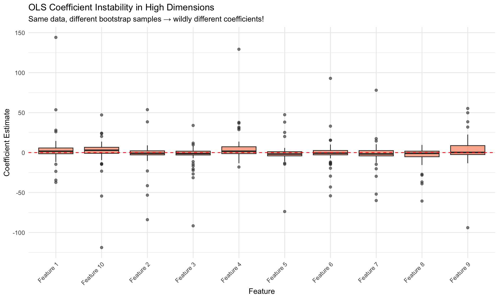
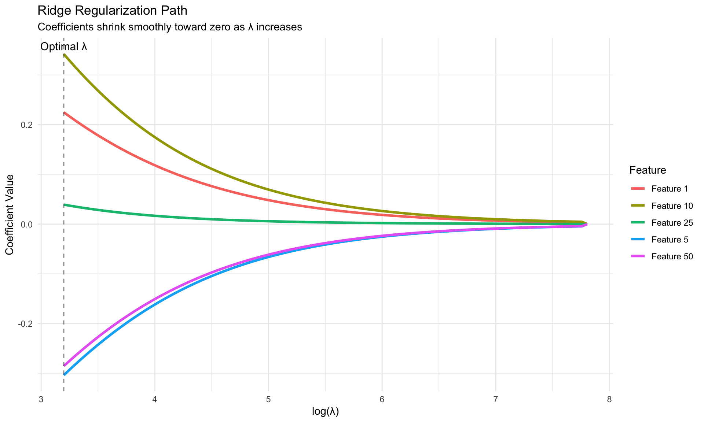
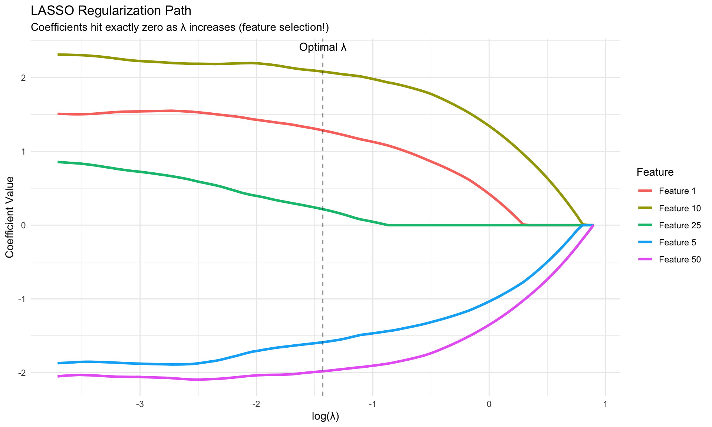
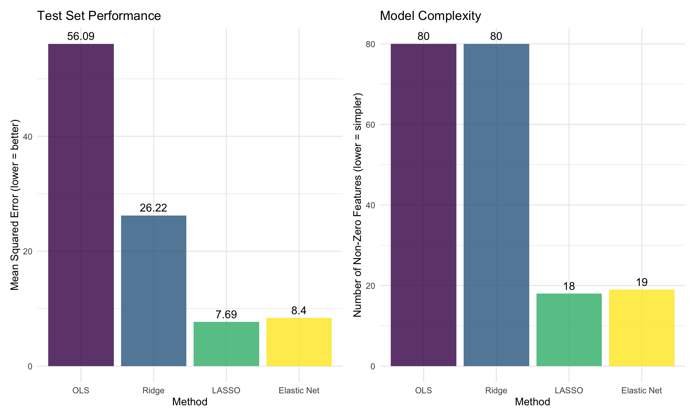
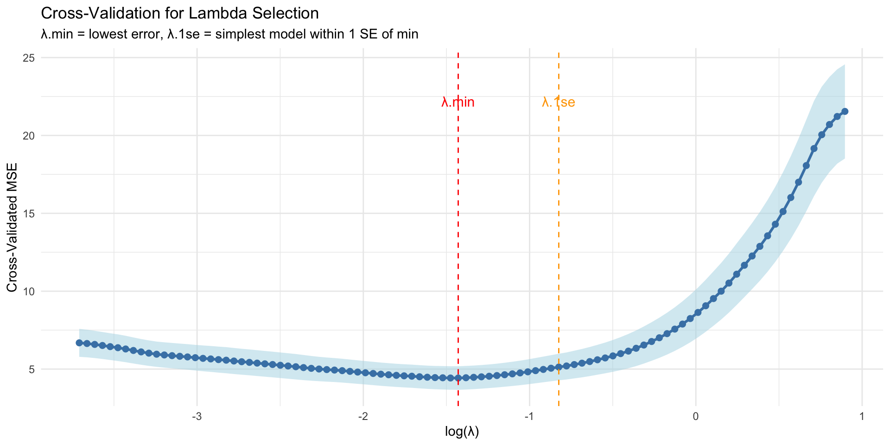

Regularization Methods for High-Dimensional Data
Ridge, LASSO, and Elastic Net: Shrinkage vs Feature Selection
2025-11-17
Today’s Learning Goals
By the end of this session, you’ll be able to:
- Explain why ordinary least squares fails in high-dimensional settings
- Distinguish between Ridge, LASSO, and Elastic Net regularization
- Apply regularization techniques to policy prediction problems
- Interpret regularization paths and select optimal tuning parameters
Note
Key insight: When you have many features relative to observations, regularization prevents overfitting by constraining model complexity—trading some bias for dramatically reduced variance.
Part I: The Problem with Many Features
Recall: The High-Dimensional Challenge
From Week 3, we learned about two faces of “big”:
Large n (Many Observations)
- 100,000+ rows
- Statistical power increases
- More stable estimates
- Challenge: Computational efficiency
Large p (Many Features)
- 1,000+ variables
- Curse of dimensionality
- Overfitting risk explodes
- Challenge: Model selection
Important
Today’s focus: What happens when p approaches n or even p > n? Ordinary least squares breaks down completely!
When OLS Fails: A Simulation
Setup: Predict county poverty rate using demographic features
# Create high-dimensional policy data
set.seed(123)
n_counties <- 100 # Small sample
p_features <- 80 # Many features
# Generate feature matrix
X <- matrix(rnorm(n_counties * p_features), nrow = n_counties, ncol = p_features)
colnames(X) <- paste0("feature_", 1:p_features)
# True model: Only 5 features actually matter
true_coefficients <- rep(0, p_features)
true_coefficients[c(1, 5, 10, 25, 50)] <- c(2, -1.5, 3, 1, -2)
# Generate outcome with noise
y <- X %*% true_coefficients + rnorm(n_counties, 0, 2)
# Create data frame
poverty_data <- as_tibble(X) %>%
mutate(poverty_rate = as.numeric(y))
cat("Data dimensions:", n_counties, "observations,", p_features, "features\n")Data dimensions: 100 observations, 80 featuresRatio p/n = 0.8 The OLS Disaster
# Try to fit OLS
X_df <- as.data.frame(X)
X_df$poverty_rate <- y
# Fit OLS (if possible)
tryCatch({
ols_model <- lm(poverty_rate ~ ., data = X_df)
cat("OLS R-squared:", summary(ols_model)$r.squared, "\n")
cat("Number of coefficients:", length(coef(ols_model)) - 1, "\n")
}, error = function(e) {
cat("OLS failed:", e$message, "\n")
})OLS R-squared: 0.9650422
Number of coefficients: 80 Problem: OLS can fit perfectly (R² ≈ 1.0) but is learning noise, not signal!
OLS Performance:Training MSE: 0 Test MSE: 56.092 Test MSE is Inf times worse!Classic overfitting: Great on training data, terrible on new data!
Visualizing the Overfitting Problem

Problem: Coefficients swing wildly with small changes in data. Model is unstable!
The Core Problem: Overfitting with Many Features
What we just saw: OLS with 80 features and 100 observations - Training MSE: Very low ✓ - Test MSE: Very high ✗ - Coefficients: Unstable and meaningless
This is classic overfitting, but why does it happen with many features?
The Problem
With many features: - Model has too much flexibility - Can fit training noise perfectly - High variance (changes drastically with different samples) - Low bias (fits training data well) - Poor generalization to new data
The Solution: Regularization
Constrain coefficient sizes: - Reduce model flexibility - Force focus on strong signals - Lower variance (more stable) - Slightly higher bias (won’t fit training perfectly) - Better generalization
Important
Key insight: Regularization deliberately underfits the training data a little bit to avoid overfitting. We accept small bias to dramatically reduce variance.
Ordinary Least Squares: A Quick Review
The goal of OLS: Find coefficients \(\beta\) that minimize squared prediction errors
\[\hat{\beta}_{OLS} = \underset{\beta}{\arg\min} \sum_{i=1}^n (y_i - x_i^T\beta)^2\]
In matrix notation:
- Data matrix \(X\): \(n\) rows (observations) × \(p\) columns (features)
- Outcome vector \(y\): \(n\) values
- Coefficients \(\beta\): \(p\) values (one per feature)
The OLS solution (from calculus): \[\hat{\beta}_{OLS} = (X^TX)^{-1}X^Ty\]
This requires inverting the matrix \((X^TX)\), which is a \(p \times p\) matrix
Closed-Form vs Iterative Solutions
Two ways to find optimal coefficients:
Closed-Form (Analytical)
\[\hat{\beta} = (X^TX)^{-1}X^Ty\]
Pros: - Exact solution in one step - No tuning needed
Cons: - Requires matrix inversion (slow for large \(p\)) - Fails when \((X^TX)\) singular - Memory intensive (\(O(p^2)\) storage)
Gradient Descent (Iterative)
Start with \(\beta^{(0)}\), then repeat: \[\beta^{(t+1)} = \beta^{(t)} - \alpha \nabla L(\beta^{(t)})\]
Pros: - Works for any dimension - Memory efficient - Handles large datasets
Cons: - Requires convergence criteria - Needs learning rate \(\alpha\) - Takes multiple iterations
Note
Reality check: Modern ML software (including glmnet) uses coordinate descent or other iterative algorithms, not closed-form solutions, even though closed forms exist for Ridge!
What Does “Singular” Mean?
A matrix is singular when it cannot be inverted (no \((X^TX)^{-1}\) exists)
Mathematical View
A matrix is singular when:
- Determinant = 0
- Rows/columns are linearly dependent
- Not full rank (i.e. some columns are redundent linear combinations of others)
Geometric Intuition
Think of columns as vectors:
- Non-singular: Columns span full space
- Singular: Columns collapse to lower dimension
- Near-singular: Columns almost collinear
Like trying to describe 3D space with vectors that all point in similar directions!
Why it matters for OLS:
When \((X^TX)\) is singular → infinitely many solutions for \(\beta\) → no unique “best” model
Important
In high dimensions: Even if not exactly singular, \((X^TX)\) becomes “nearly singular” (determinant ≈ 0), making \(\beta\) estimates wildly unstable
Why Does OLS Fail in High Dimensions? The Math
Recall the OLS formula: \(\hat{\beta}_{OLS} = (X^TX)^{-1}X^Ty\)
When p ≈ n or p > n:
- Matrix \((X^TX)\) becomes singular or near-singular
- Cannot invert reliably (determinant ≈ 0)
- Numerical instability
- Infinite solutions exist
- Many coefficient vectors fit training data perfectly
- No unique “best” model
- Variance explodes
- \(\text{Var}(\hat{\beta}) = \sigma^2(X^TX)^{-1}\)
- When \((X^TX)\) is near-singular, variance → ∞
Important
Solution: We need to constrain the coefficient space to prefer simpler, more stable models.
Part II: Ridge Regression (L2 Regularization)
The Ridge Solution: Shrink Everything
Ridge regression adds a penalty for large coefficients:
\[\hat{\beta}_{Ridge} = \underset{\beta}{\arg\min} \left\{ \sum_{i=1}^n (y_i - x_i^T\beta)^2 + \lambda \sum_{j=1}^p \beta_j^2 \right\}\]
Loss Term (Left)
- \(\sum_{i=1}^n (y_i - x_i^T\beta)^2\)
- Standard OLS: minimize prediction error
- Encourages good fit
Penalty Term (Right)
- \(\lambda \sum_{j=1}^p \beta_j^2\)
- L2 penalty: sum of squared coefficients
- Encourages small coefficients
- \(\lambda\) controls trade-off
Closed-form solution: \(\hat{\beta}_{Ridge} = (X^TX + \lambda I)^{-1}X^Ty\)
Adding \(\lambda I\) makes matrix invertible even when \(p > n\)!
The Lambda Parameter: Controlling Shrinkage
\(\lambda\) (lambda) is the regularization parameter:
When λ = 0
- No penalty
- Ridge = OLS
- High variance, low bias
- Overfits in high dimensions
When λ → ∞
- Heavy penalty
- All coefficients → 0
- Low variance, high bias
- Underfits everything

Key insight: Optimal λ minimizes total error = bias² + variance
Ridge in Action: Step 1 - Cross-Validation
Optimal lambda: 24.5111 Cross-validation finds the λ that best balances bias and variance
Ridge in Action: Step 2 - Fit Final Model
All 80 features retained (none exactly zero)Coefficient range: -0.304 to 0.342 Ridge shrinks all coefficients but keeps all features in the model
Ridge in Action: Step 3 - Test Performance
Test MSE Comparison:OLS: 56.092 Ridge: 26.221 Improvement: 53.3 %Ridge dramatically reduces test error by stabilizing coefficients!
The Ridge Regularization Path

Key observation: Ridge shrinks all coefficients, but never exactly to zero
Ridge: Strengths and Limitations
Strengths ✓
- Stabilizes estimates in high dimensions
- Always has solution even when p > n
- Computationally efficient (closed form)
- Works well when many features are relevant
- Reduces variance dramatically
Limitations ✗
- Keeps all features in the model
- No feature selection (all βs ≠ 0)
- Interpretation remains difficult with many features
- Not sparse: Cannot identify which features truly matter
Note
Policy implication: Ridge is great for prediction but doesn’t help with understanding which policies or factors drive outcomes.
Part III: LASSO (L1 Regularization)
LASSO: Shrinkage AND Selection
LASSO = Least Absolute Shrinkage and Selection Operator
\[\hat{\beta}_{LASSO} = \underset{\beta}{\arg\min} \left\{ \sum_{i=1}^n (y_i - x_i^T\beta)^2 + \lambda \sum_{j=1}^p |\beta_j| \right\}\]
Key difference from Ridge: Uses L1 penalty (\(|\beta_j|\)) instead of L2 (\(\beta_j^2\))
Ridge (L2)
\[\lambda \sum_{j=1}^p \beta_j^2\] - Smooth penalty - Shrinks gradually - All coefficients stay non-zero
LASSO (L1)
\[\lambda \sum_{j=1}^p |\beta_j|\] - Sharp penalty - Forces exact zeros - Automatic feature selection
Important
Key insight: The L1 penalty’s sharp corners at zero force many coefficients to be exactly zero, performing automatic feature selection!
LASSO in Action: Step 1 - Cross-Validation
Optimal lambda: 0.2395 Cross-validation finds the λ that balances fit and sparsity
LASSO in Action: Step 2 - Feature Selection
# Fit final LASSO model
lasso_model <- glmnet(
x = X_train,
y = y_train,
alpha = 1,
lambda = lasso_cv$lambda.min
)
# Check how many coefficients are non-zero
lasso_coefs <- coef(lasso_model)[-1] # Exclude intercept
n_nonzero <- sum(lasso_coefs != 0)
cat("Number of non-zero coefficients:", n_nonzero, "out of", p_features, "\n")Number of non-zero coefficients: 18 out of 80 Sparsity: 77.5 %LASSO automatically selected only ~18 features out of 80!
LASSO in Action: Step 3 - Test Performance
Test MSE Comparison:OLS: 56.092 Ridge: 26.221 LASSO: 7.687 Key result: LASSO reduced 80 features to ~18 while dramatically improving prediction!
The LASSO Regularization Path

Notice: Coefficients hit zero abruptly, unlike Ridge’s smooth shrinkage
LASSO: Strengths and Limitations
Strengths ✓
- Automatic feature selection (sparse solutions)
- Interpretable (fewer features)
- Good for exploration (find important features)
- Computationally efficient
- Works when p >> n
Limitations ✗
- Unstable selection when features are correlated
- Arbitrary selection among correlated features
- May sacrifice prediction for sparsity
Note
Policy context: LASSO is great for discovery and variable screening, but feature selection can be unstable across different samples.
Part IV: Elastic Net (Best of Both Worlds)
Elastic Net: Combining L1 and L2
Elastic Net mixes Ridge and LASSO penalties:
\[\hat{\beta}_{ElasticNet} = \underset{\beta}{\arg\min} \left\{ \sum_{i=1}^n (y_i - x_i^T\beta)^2 + \lambda \left[ \alpha \sum_{j=1}^p |\beta_j| + (1-\alpha) \sum_{j=1}^p \beta_j^2 \right] \right\}\]
Two tuning parameters:
- \(\lambda\): Overall regularization strength (like before)
- \(\alpha\): Mix between L1 and L2
- \(\alpha = 0\) → Pure Ridge (L2)
- \(\alpha = 1\) → Pure LASSO (L1)
- \(0 < \alpha < 1\) → Elastic Net (combination)
Tip
Common choice: \(\alpha = 0.5\) gives equal weight to L1 and L2 penalties. But you can tune this parameter.
Why Elastic Net?
Problem scenario: Your policy dataset has correlated features (common in observational data!)
LASSO’s Problem
When features are correlated: - Picks one arbitrarily from the group - Sets others to exactly zero - Selection is unstable across samples - Which feature “wins” can change
Example: Income and education correlated → LASSO picks one, zeros the other
Elastic Net’s Advantage
With correlated features: - Tends to keep more from correlated group - L2 penalty prevents domination by one feature - L1 penalty still provides some sparsity - More stable than LASSO, sparser than Ridge
Example: Income and education both retained with moderate coefficients
Important
Practical advice: When in doubt about feature correlations (common in policy data), start with Elastic Net!
Elastic Net in Action
# Fit Elastic Net with cross-validation
# Try alpha = 0.5 (equal mix of L1 and L2)
enet_cv <- cv.glmnet(
x = X_train,
y = y_train,
alpha = 0.5, # Elastic Net
nfolds = 10
)
# Fit final model
enet_model <- glmnet(
x = X_train,
y = y_train,
alpha = 0.5,
lambda = enet_cv$lambda.min
)
# Check sparsity
enet_coefs <- coef(enet_model)[-1]
n_nonzero_enet <- sum(enet_coefs != 0)
cat("Elastic Net selected", n_nonzero_enet, "features\n")Elastic Net selected 19 featuresLASSO selected 18 features
Final Test MSE Comparison:OLS: 56.092 Ridge: 26.221 LASSO: 7.687 Elastic Net: 8.397 Performance Comparison

Key insight: Regularization methods dramatically improve over OLS while creating simpler, more interpretable models!
Part V: Practical Implementation in R
Hyperparameter Tuning: Selecting λ
Challenge: How do we choose the optimal λ?
Solution: Cross-validation (typically 10-fold)

Two Lambda Choices: λ.min vs λ.1se
λ.min
Definition: Lambda with lowest CV error
When to use: - Prediction is top priority - Want best possible accuracy - Don’t need extreme parsimony
Trade-off: More features, slight overfitting risk
λ.1se
Definition: Largest lambda within 1 SE of minimum
When to use: - Interpretability matters - Want simpler model - Suspicious of overfitting
Trade-off: Slightly worse prediction, much simpler
Tip
Policy recommendation: Use λ.1se for stakeholder-facing models (simpler, more robust), λ.min for internal prediction tasks.
Complete Workflow with caret
# Alternative approach: Use caret for unified interface
library(caret)
# Set up training control
train_control <- trainControl(
method = "cv",
number = 10,
savePredictions = "final"
)
# Train Elastic Net with caret
enet_caret <- train(
x = X_train,
y = y_train,
method = "glmnet", # Elastic Net
trControl = train_control,
tuneGrid = expand.grid(
alpha = seq(0, 1, by = 0.1), # Try different mixes
lambda = 10^seq(-3, 1, length = 100) # Try different strengths
)
)
# Best parameters
cat("Best alpha:", enet_caret$bestTune$alpha, "\n")
cat("Best lambda:", enet_caret$bestTune$lambda, "\n")
# Predict
predictions <- predict(enet_caret, newdata = X_test)Advantage: caret automatically searches over both α and λ to find optimal combination!
Part VI: Policy Applications and Best Practices
Real-World Policy Use Cases
When to use regularization in policy settings:
High-Dimensional Scenarios
- Program eligibility with many criteria
- Risk assessment with extensive surveys
- Geographic targeting with census variables
- Text analysis of policy documents
- Time series with many lags/indicators
Method Selection Guide
- Ridge: All features matter, need stability
- LASSO: Few features matter, need interpretability
- Elastic Net: Correlated features, balanced approach
Important
Default recommendation: Start with Elastic Net (α = 0.5) and compare to pure Ridge and LASSO.
Practical Guidelines
Pre-processing essentials:
- Standardize features (mean = 0, SD = 1)
- Regularization is scale-sensitive
- Features on different scales penalized unfairly
- Handle missing data appropriately
- Impute before regularization
- Consider missingness as a feature
- Avoid data leakage
- Standardize using training data only
- Apply same transformation to test data
Model selection:
Try multiple α values (0, 0.25, 0.5, 0.75, 1)
Compare to simple baselines (mean, linear regression)
Common Mistakes to Avoid
Technical Mistakes
- Not standardizing features
- Penalty treats all features equally by scale
- Using test data in λ selection
- CV should only use training data
- Interpreting coefficients without standardization
- Can’t compare magnitudes fairly
- Ignoring categorical variables
- Need proper encoding (dummy variables)
Interpretation Mistakes
- Treating selection as definitive
- LASSO selection is unstable
- Ignoring excluded features
- Zero ≠ unimportant (just not needed given others)
- Forgetting correlations
- Selected feature may be proxy for others
- Overstating causality
- Prediction ≠ causal inference
Regularization vs Other Approaches
How does regularization compare to alternatives?
| Approach | Pros | Cons | Best For |
|---|---|---|---|
| Regularization (Ridge/LASSO) | Principled, stable, automatic | Requires tuning, still somewhat arbitrary | p ≈ n, correlated features, prediction focus |
| Stepwise Selection | Simple, interpretable | Greedy, unstable, many false positives | Small p, exploratory analysis |
| Random Forest | High accuracy, robust | Black box, no coefficients | Black box OK, pure prediction |
| PCA then Regression | Reduces dimensions, interpretable | Loses feature meaning | p >> n, don’t need individual features |
| Domain Expertise | Uses substantive knowledge | Time-intensive, subjective | Small p, domain theory exists |
When Regularization Isn’t Enough
Regularization has limits:
- Extremely high dimensions (p = 100,000+)
- Consider other dimension reduction (PCA, embeddings)
- Use specialized methods
- Severe multicollinearity
- Elastic Net helps but doesn’t solve
- Consider feature engineering to reduce correlation
- Complex nonlinear relationships
- Regularization works on linear combinations
- May need tree-based methods, kernels, or neural networks
- Causal inference goals
- Regularization optimizes prediction, not causation
- Use proper causal inference methods (IV, DiD, etc.)
Part VII: Looking Forward
Integration with Modern ML
Regularization in modern ML pipelines:
Neural Networks
- Dropout: Randomly drop neurons (implicit regularization)
- Weight decay: L2 penalty on network weights
- Early stopping: Stop before overfitting
Tree-Based Methods
- Maximum depth: Limits model complexity
- Minimum samples: Regularizes splits
- Shrinkage: Reduces tree contributions (boosting)
Note
Key insight: Regularization is a fundamental concept across all of machine learning, not just linear models!
Next Week Preview: Tree-Based Models
Week 9 topics:
Decision Trees & Random Forests
- Non-linear decision boundaries
- Automatic interaction detection
- Built-in feature importance
- No standardization needed
XGBoost & Ensembles
- Gradient boosting
- Regularized tree building
- Handles missing data
- Often wins competitions
How they connect to regularization:
- Trees have their own regularization (depth, samples, pruning)
- Boosting includes shrinkage (like Ridge for trees)
- Random Forests use feature subsampling (like dropout)
Key Takeaways
- OLS fails in high dimensions (p ≈ n) due to variance explosion and overfitting
- Ridge (L2) shrinks all coefficients smoothly toward zero but keeps all features
- LASSO (L1) forces exact zeros, performing automatic feature selection
- Elastic Net combines both, handling correlated features better than LASSO alone
- Use hyperparameter tuning to select λ
- Always standardize features before applying regularization
- Regularization is about the bias-variance trade-off: Accept small bias to dramatically reduce variance
- Policy context matters: Choose method based on whether you need interpretability, prediction, or both
Questions?
Remember: Regularization is one of the most important tools in modern statistics and machine learning. When you have many features, it’s not optional—it’s essential for building models that generalize to new data!